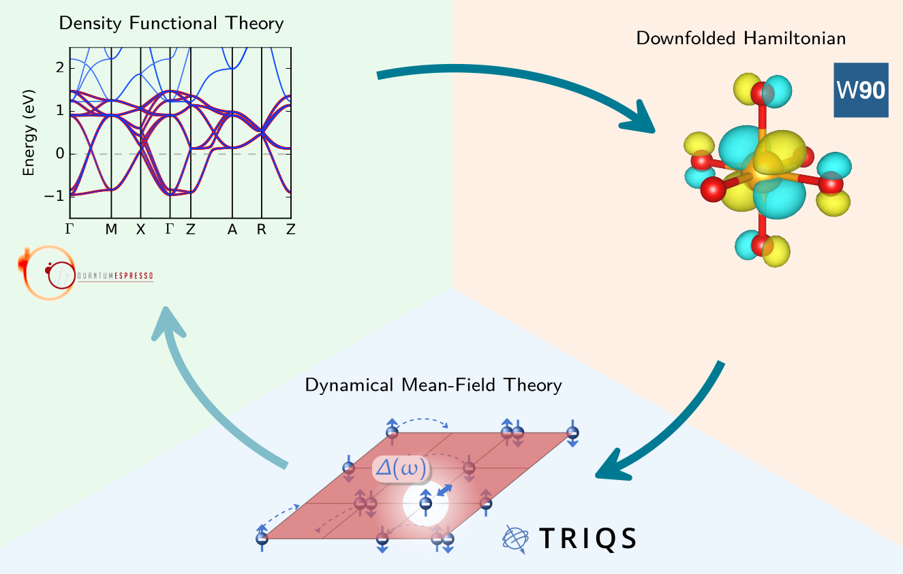
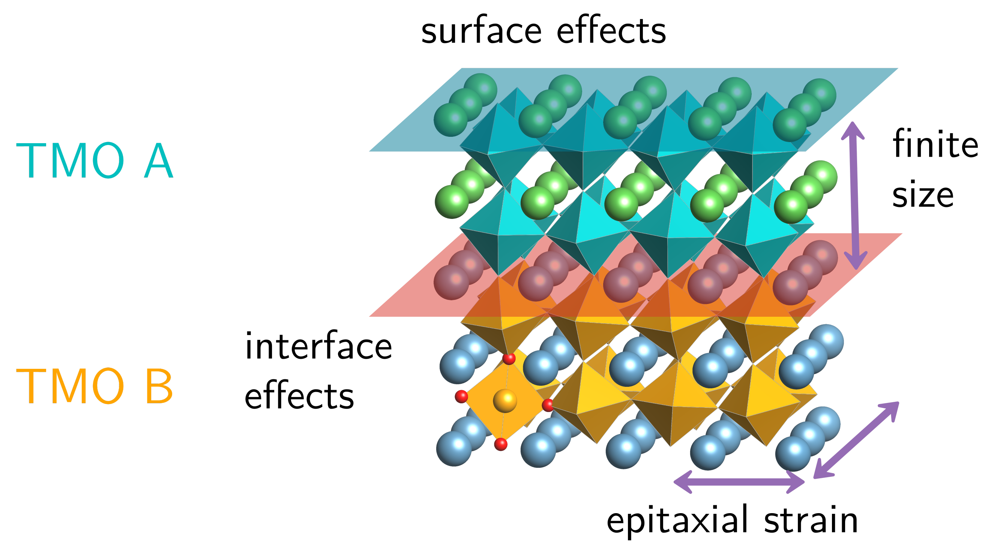
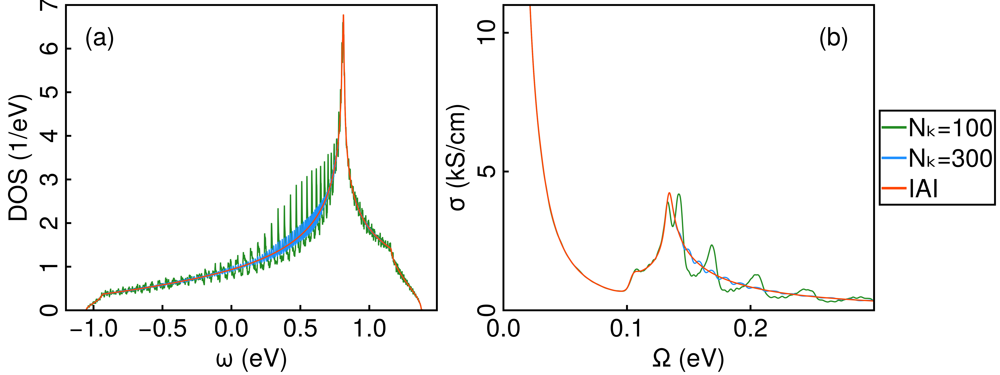

I am a theoretical condensed matter physicist working on strongly correlated quantum materials. I combine ab initio electronic structure calculations, effective low-energy models and many-body methods to compute transport and spectroscopic properties accurately enough for quantitative comparison with experiment — from the anomalous c-axis resistivity of Sr₂RuO₄ to the microscopic origin of the cuprate pseudogap. Much of this work is done in close collaboration with experimental
groups.
Most recently I was a Postdoctoral Research Associate in Alessandro Toschi's group at
TU Wien, on a project I proposed and secured the funding for. Before that I was an Associate Research Scientist and Flatiron Research Fellow at the
Center for Computational Quantum Physics.
I obtained my Ph.D. in Materials Science from ETH Zurich, where I worked under the supervision of Prof. Claude Ederer.
Beyond research, I am passionate about open-source research software -
I contribute to multiple open-source software projects, serve as an editor for the
Journal of Open Source Software, and have an interest in data visualization and illustration. Download my CV
here or read about my work in this
Spotlight article.
Research highlights
Connection to experiment
A recurring theme in my work is computing observables accurately enough that they
can be held against measurements directly, without adjustable parameters. This has
led to close and long-running collaborations with experimental groups — among
them work on angle-resolved photoemission in the correlated metal
Sr2RuO4 with the groups of A. Tamai and F. Baumberger in
Geneva, and on the anomalous out-of-plane resistivity of layered oxides. A joint
project with the group of Lior Kornblum at the Technion on correlated transparent
conductors is currently in preparation.
Precision many-body methods
While the properties of conventional materials can be described adequately within frameworks like density functional theory,
strongly correlated materials often require a more demanding treatment within a many-body framework such as dynamical mean-field theory.
Capturing the electronic structure of quantum materials correctly is essential to gain insights into the fascinating physics and potential
technological applications of e.g. phase transitions, high-temperature superconductivity, exotic magnetic ordering and Mott physics.

Functional materials
Oxide heterostructures consist of atomic layers of complex transition metal
oxides whose properties often differ from those of the corresponding bulk
compounds. They therefore offer the opportunity to develop "materials by design",
where electronic properties are tailored to specific applications.

Tool building: web app FermiSee
We have recently developed a WebApp for data visualization and phenomenology
of correlated electronic structure based on input obtained by
Wannier90, and
TRIQS. You can test
FermiSee in your browser or checkout the
git repo for more information and demos.

Spotlight: recent paper
In this recent
publication
we present an automatic, high-order accurate and adaptive Brillouin zone integration algorithm
for the calculation of the optical conductivity using Wannier interpolation.
We released an open-source software package
AutoBZ.jl
available for download implementing the corresponding algorithms in Julia as described in this
JOSS paper.

Selected Papers
-
Beck S., Shammami M., Van Muñoz L., Kaye J., Georges A., and Mravlje J.,
"Insulating Out-of-Plane Transport in Anisotropic Metals: The Case of
Sr2RuO4 and Related Layered Oxides",
Physical Review Letters 137, 166301 (2026)
DOI
-
Beck S. and Ramires A.,
"Structural reconstruction as the origin of the cuprate pseudogap",
submitted (2025)
arXiv
-
Marrazzo A., Beck S., Margine E. R., Marzari N., Mostofi A. A.,
Qiao J., Souza I., Tsirkin S. S., Yates J. R., and Pizzi G.,
"Wannier-function software ecosystem for materials simulations",
Reviews of Modern Physics 96, 045008, (2024)
DOI
-
Blesio G., Beck S., Gingras O., Georges A., and Mravlje J.
"Signatures of Hund metal and finite-frequency nesting in Sr2RuO4
revealed by electronic Raman scattering",
Physical Review Research 6, 023124 (2024)
DOI
-
Hunter A., Beck S., Cappelli E., Margot F., Straub M., Alexanian Y., Gatti G.,
Watson M. D., Kim T. K., Cacho C., Plumb N. C., Shi M., Radović M., Sokolov D. A.,
Mackenzie A. P., Zingl M., Mravlje J., Georges A., Baumberger F., and Tamai A.
"Fate of Quasiparticles at High Temperature in the Correlated Metal Sr2RuO4",
Physical Review Letters 131, 236502 (2023)
DOI
-
Kaye J., Beck S., Barnett A., Van Muñoz L., and Parcollet O.
"Automatic, high-order, and adaptive algorithms for Brillouin zone integration",
SciPost Physics 15, 062 (2023)
DOI
-
Beck S., Hampel A., Parcollet O., Ederer C., and Georges A.,
"Charge self-consistent electronic structure calculations
with dynamical mean-field theory using Quantum ESPRESSO,
Wannier90 and TRIQS",
Journal of Physics: Condensed Matter, 34, 345601 (2022)
DOI
Software
I contribute to a number of open source software projects.
| Name |
Description |
| solid_dmft |
Versatile python wrapper to perform DFT + DMFT calculations utilizing the TRIQS software library
|
| AutoBZ.jl |
Modular Julia package iplementing efficient algorithms for Brillouin zone integration
|
| FermiSee |
WebApp for data visualization and phenomenology of correlated electronic structure
|
| TRIQS |
Toolbox for Research on Interacting Quantum Systems
|
| Quantum ESPRESSO |
Open-source suite for quantum simulation of materials
|